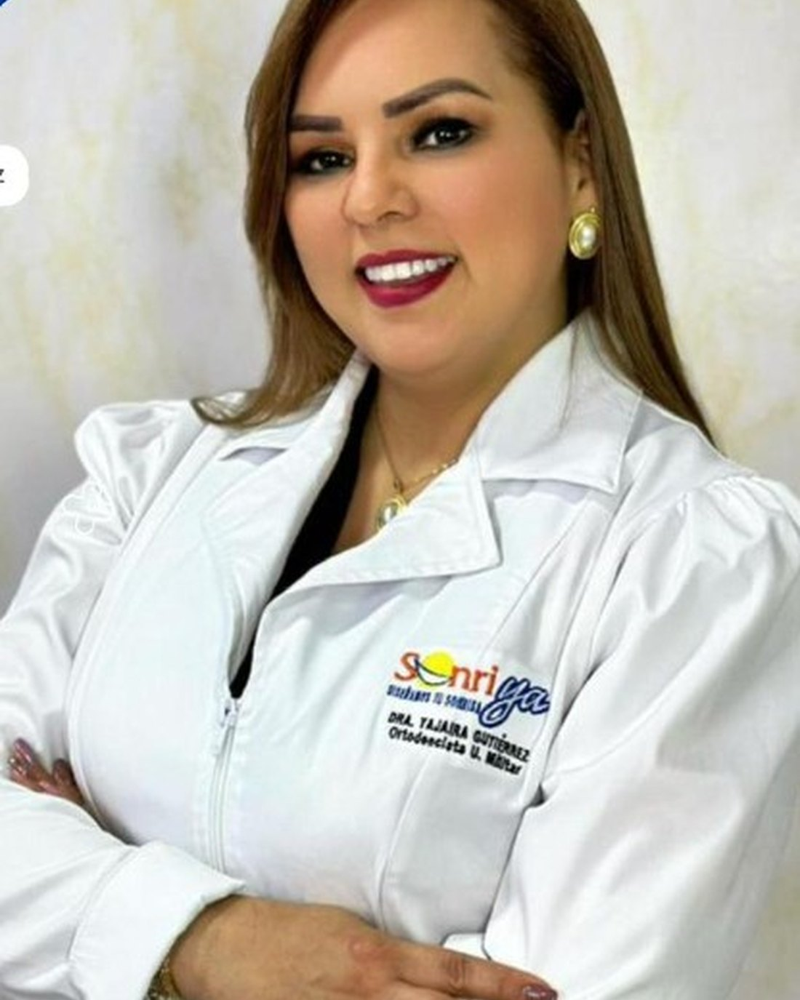

En Sonriya diseñamos su sonrisa.
Clínica odontológica en Los Patios, Norte de Santander. Ocho especialidades bajo el cuidado de la Dra. Yajaira Gutiérrez, Ortodoncista de la Universidad Militar, y un equipo dedicado a diseñar sonrisas con criterio clínico y trato cercano.

En Sonriya creemos que la sonrisa refleja quién es cada paciente. Por eso ofrecemos tratamientos odontológicos integrales: ortodoncia, diseño de sonrisa, rehabilitación oral, implantes, endodoncia, periodoncia, cirugía oral y odontopediatría, todo en un solo consultorio.
La Dra. Yajaira Gutiérrez es Ortodoncista de la Universidad Militar y dirige la clínica con un enfoque cercano y personalizado. Atendemos en Los Patios, Norte de Santander, en la Av. 10 #16-06, segundo piso.
Conozca másLa Dra. Yajaira Gutiérrez se especializó en Ortodoncia en la Universidad Militar Nueva Granada, una de las formaciones más exigentes del país.
Desde una limpieza hasta un diseño completo de sonrisa con implantes. No tiene que ir a varias clínicas, lo coordinamos todo nosotros.
Aceptamos efectivo, tarjetas de crédito y financiamos con SISTECREDITO para que su tratamiento no espere por temas económicos.
OCHO ESPECIALIDADES EN UN SOLO CONSULTORIO
Tratamientos de ortodoncia para alinear sus dientes y corregir la mordida. La Dra. Yajaira es ortodoncista certificada de la Universidad Militar, así que el procedimiento se hace con criterio académico.
Diseñamos su sonrisa combinando forma, color y proporción según su rostro. Es nuestro servicio insignia y por eso es el que da nombre a la clínica: Sonriya, diseñamos su sonrisa.
Devolvemos la función y la estética cuando se ha perdido parte de la estructura dental o piezas completas. Trabajamos con prótesis fijas, removibles y rehabilitación sobre implantes.
Reemplazamos uno o varios dientes ausentes con implantes en titanio. Mejoramos su masticación, su pronunciación y la estética sin tocar los dientes vecinos.
Tratamiento de conductos cuando hay dolor dental espontáneo, sensibilidad fuerte al frío o al calor o dolor al masticar. Resolvemos la causa sin tener que extraer el diente.
Cuidado y tratamiento de encías y hueso. Si le sangran las encías al cepillarse o tiene mal aliento, posiblemente necesite una limpieza profesional o tratamiento periodontal.
Extracciones complejas, cirugía de cordales y procedimientos quirúrgicos menores. Trabajamos con protocolos de manejo del dolor antes, durante y después del procedimiento.
Atención odontológica para niños y adolescentes con manejo especializado para que sus primeras visitas al odontólogo sean tranquilas y formen buenos hábitos para toda la vida.
Av. 10 No. 16-06, Piso 2
Barrio 11 de Noviembre
Los Patios, Norte de Santander
"Llevo dos años en tratamiento de ortodoncia con la Dra. Yajaira y los resultados son impresionantes. Su trato es muy humano y siempre explica todo con paciencia."
"Hace tres meses me hice el diseño de sonrisa en Sonriya. El resultado superó mis expectativas, se ve completamente natural y la atención fue de primera."
"Vine por la promo de limpieza y blanqueamiento y terminé haciéndome el tratamiento completo. La doctora es muy profesional y la clínica está muy bien equipada."
Pida su valoración inicial en Sonriya. La recibimos en Los Patios, Av. 10 No. 16-06, segundo piso.